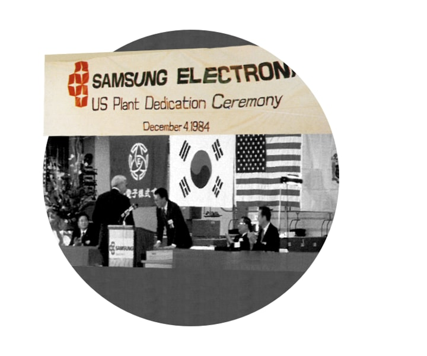

Nuestra historia comienza en 1969, cuando Samsung nació con la intención de ayudar
a que las personas logren lo imposible.
Después de más de 50 años, seguimos innovando, creando tecnología que derriba
las barreras antiguas y nuevas, y ayudando a las personas a lograr lo imposible.
Nuestro propósito nos sigue impulsando, y es por eso que ponemos a las personas y lo que les importa
en el centro de todo lo que creamos.

Somos pioneros implacables
Allanamos el camino: vemos los obstáculos como oportunidades; no tenemos miedo de lo nuevo o lo desconocido; e imaginamos y creamos tecnología que abre nuevos a fin de que las personas logren lo imposible.